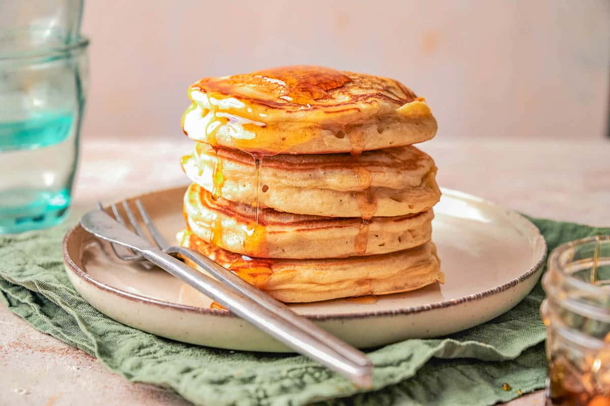

Easy Fluffy Pancakes
These simple pancakes are quick to make and turn out perfectly fluffy every time. They are a classic breakfast favorite!

Recipe Details
- Prep time: 5 minutes
- Cook time: 10 minutes
- Servings: 4 people
- Difficulty: Beginner
Ingredients
- 1 1/2 cups all-purpose flour
- 3 tablespoons white sugar
- 1 tablespoon baking powder
- 1 1/4 cups whole milk
- 1 large egg
- 3 tablespoons melted butter
Instructions
- In a large bowl, whisk together the flour, sugar, and baking powder.
- In a separate bowl, mix the milk, egg, and melted butter.
- Pour the wet ingredients into the dry ingredients and stir gently. Do not overmix! Lumps are okay.
- Heat a lightly oiled frying pan over medium-high heat.
- Pour about 1/4 cup of batter for each pancake onto the hot pan.
- Cook until bubbles form on top, then flip and cook until golden brown on the bottom.
Tips & Notes
Pro Tip: If you want extra flavor, add a splash of vanilla extract or a handful of chocolate chips to the batter right before you cook them.
Nutrition Facts (Per Serving)
- Calories: 250
- Fat: 8g
- Carbohydrates: 35g
Recipe adapted from Classic Pancake Recipes.